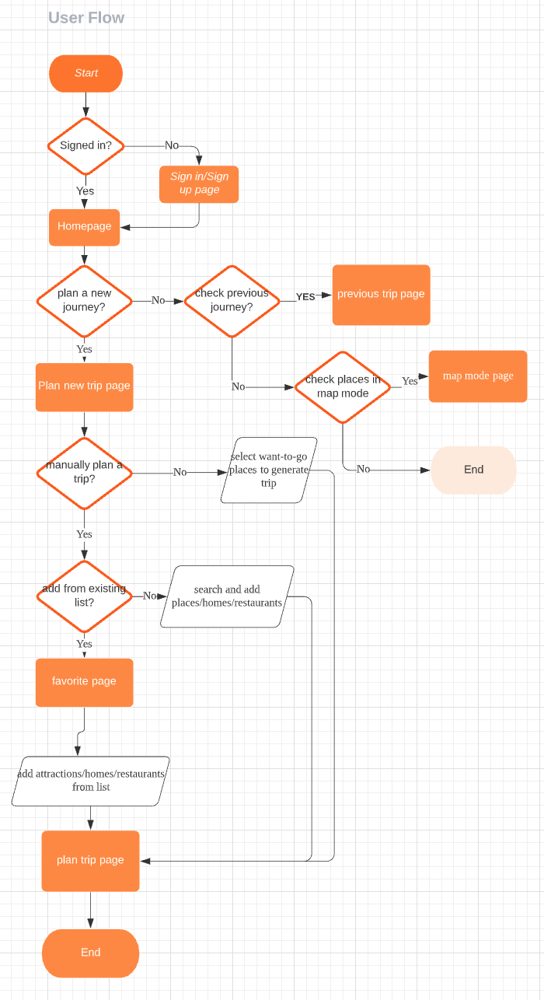

Project Description
- Planip is a trip planning app. It aims at providing users with the most efficient way to plan a trip.
- By cooperating with multiple third-party traveling apps and websites, Planip helps users to collect and sort information and thus create customized trip plans. Users can create a plan from scratch, or choose to generate a plan accordingly or get recommended trip plans. Furthermore, users can share plans with their friends, and everyone can plan their trips together at the same time.
- Planip is a group project in which I cooperated with Phyllis Fei; both of us play an equal role in user research, interaction design, and future visual design.
- Goals:
- Learn about common behaviors of individuals when go traveling, including relevant information gathering, preparation before travel, habits during and after a trip.
- Determine users’ needs and frustrations when planning for a trip.
- Identify areas of the planning experience that could be improved.
- Methods:
- Quantitative: conducted surveys among different age groups and received 243 valid responses.
- Qualitative: interviewed 5 people--three people who are students from various universities and two people who are already in work.
- Findings:
- Users need well-categorized traveling information for their reference.
- Users value efficiency over conciseness when planning for a trip.
- Users need apps to assist them in planning a trip with others.
Persona Creation
Ideation
Based on previous user research, we decided to create three scenarios and thus provide three entrances accordingly.
- First is when users know how to plan the trip and choose to plan everything manually from scratch.
- Second is when users have a list of places they want to visit but want the app to generate the most efficient route for them.
- Third is when users want a direct recommended route based on their interests and traveling companions.
Basic User Flow:
Wireframes (Ongoing)